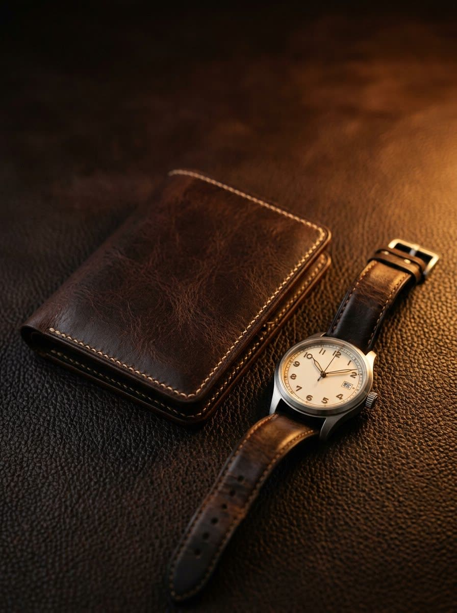

Luxury Product Still Life Campaign
PRP-006Prop stylingNano Banana Proby AI Guide-Note - 実務で使えるAI活用メディアSeptember

A sophisticated prompt for high-end products like leather goods or watches, emphasizing craftsmanship, warm side lighting, and elegant typography for Nano Banana Pro.
Prompt
[Product and Campaign Info]
- Appeal Text: {argument name="appeal copy" default="Exquisite & Selected"}
- Brand Copy: {argument name="brand copy" default="Lifelong leather goods created by skilled craftsmanship"}
- Target Product: {argument name="products" default="Genuine leather wallet and wristwatch"}
[Quality, Effects, and Composition]
- Style: Still-life product photography for high-end luxury brand catalogs or luxury magazine spreads.
- Subject: {argument name="products" default="Genuine leather wallet and wristwatch"} placed on deep vintage leather or high-quality dark-toned textures. Details that evoke artisanal craftsmanship (such as stitching or metal hairline finishing) are beautifully and richly depicted.
- Lighting and Color: A color palette based on deep dark brown, black, and brass gold. Warm amber-toned sidelighting with classic, heavy shadows.
- Text Placement (for GPT-image / Nano Banana Pro): Using a thin gold-colored font, the text "{argument name="appeal copy" default="Exquisite & Selected"}" and "{argument name="brand copy" default="Lifelong leather goods created by skilled craftsmanship"}" are subtly placed as typography in a calm position on the screen.
[Strict Layout and Output Constraints (Required)]
- Output the finished flat 2D design itself, filling the entire canvas. Scene elements inside the design (walls, rooms, shadows) described above are allowed. Absolutely NO photo-of-a-poster mockups: no picture frames, no poster-on-wall or poster-on-desk shots, no perspective warp or drop shadow around the artwork's edges.
- Aspect Ratio: --ar 3:4Tags: product